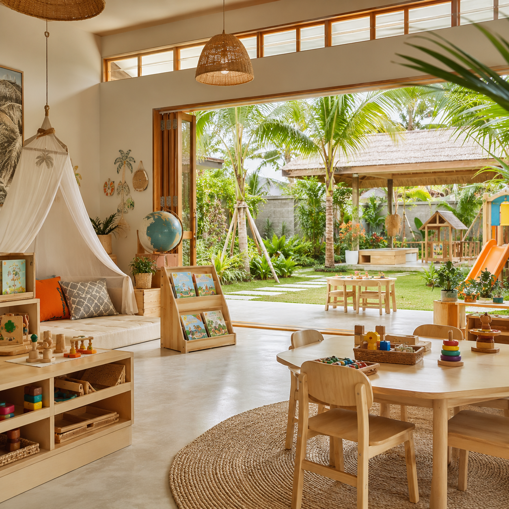

Страна и регион
Реклама в регионе «Бали и Индонезия»: кейсы
Реклама для проектов на Бали: экспаты, релокация, семьи с детьми. 2 кейса(ов) ProDigital с цифрами: площадки — Meta* / Instagram*.
 ВНЖ на Бали для иностранцев
KITAS на Бали для иностранцев: 147 лидов по 5,28 $ за период с декабря 2023 по январь 2024.
5,28 $ / лид
Читать кейс
ВНЖ на Бали для иностранцев
KITAS на Бали для иностранцев: 147 лидов по 5,28 $ за период с декабря 2023 по январь 2024.
5,28 $ / лид
Читать кейс

Детский сад на Бали Продвижение международного детского сада для экспатов на Бали. Аудитория — русскоязычные и англоязычные семьи. Читать кейсНужны клиенты для вашего бизнеса?
Расскажите о проекте — предложим модель продвижения под ваш продукт, рынок и бюджет.